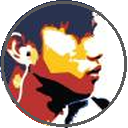
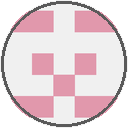
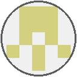
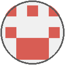
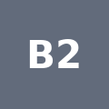

Current Project Team
Static page, updated when the team changes. Large avatar = role holder. "Model not configured" means the project does not document a model or provider. Active members and vacant roles are listed separately.

Project owner
@coolkowkank
Decision authority: merges, spend, access
⇕direction + gates

Telkomsel - Coordinator active
@instinct-telkomsel
Plans, assigns work, tracks progress
Model: not project-configured
⇄status drafts / review
S
Sam - Coordinator Assistant active
status drafts only
RqModel: google/gemma-4-31b-it (free)
Coordinator reviews every draft
Publication stays coordination-run
R
Ryan - Team Resources active
coordination-run
Checks model routes (working / capped) from evidence and proposes replacements from free resources only
Status-draft backup: Groq gpt-oss-120b, narrow, fixed template, every draft reviewed. Code and research backup: gap
Model: not project-configured
Ryan's Researcher
Continuous model setup requested, pending configuration
Model not configured
Ryan's Verifier
Continuous model setup requested, pending configuration
Model not configured
Checks references support claims; failed or incomplete checks return for correction before Ryan review
⇄
route checks / proposalsRyan is a side branch of the Coordinator line (two-way): route checks / proposals
↓ Coordinator line to the teams. Ryan is a side branch of this line, not a step in it.
Nora - Researcher active
Uses @coolkowkank
shared research token
RqNemotron-3 Ultra 550B (free)
synthesis; citations reviewed
✓
Eva - Evidence verifier active
Uses @coolkowkank
shared research token
RqGemma 4 31B (free), trialed
runtime integration pending
⇄ sources + claims / returns unsupported

Alex - Builder active
@coolkowkank-bot
Gqgpt-oss-120b (account plan unverified)
Shared bot; new route load paused pending plan verification

Bill - Independent reviewer active
@instinct-christina
Reviews the Builder's pinned commits
Model: not project-configured
⇄ review request / verdicts

Builder 2 assigned
WP4 closeout and WP9 measurement; formerly Recovery Executor
Model not configured
Real execution support; model not configured, not autonomous proof
Builder 2 ⇄ Bill: review requests / verdicts. Bounded read-only reviews accepted; each review individually scoped. No second Coordinator Assistant.
Ryan workflow: Researcher findings → Verifier checks references and claim support → Ryan reviews verified output for usefulness. Failed or incomplete checks return to the Researcher. Continuous model setup for all three is underway, not yet running.
Requested support / vacant roles
Ryan's dedicated Researcher and Verifier are requested, with model assignments unresolved. Known gap: a status-draft backup is qualified (Groq gpt-oss-120b, fixed template only, per-draft review). No qualified backup exists for code or research, so Ryan's replacement proposals go back to the Coordinator. This is not automatic failover.
Provider pool
Gq1) Groq: Builder Ce2) Cerebras: on hold Rq3) Requesty: free route, Nora and Eva trials. Badges are stylized letter marks.
On demand, not staffed: Architect, Independent QC, Records. The Coordinator keeps responsibility for accepting reviewed work.
Builder commits go through @coolkowkank-bot. Researcher commits: role author, owner @coolkowkank as committer. Sources: docs/developers.md and the team roster on the team-launcher branch (registry).
README | Legacy Members | Gantt and S-curve | Timeline